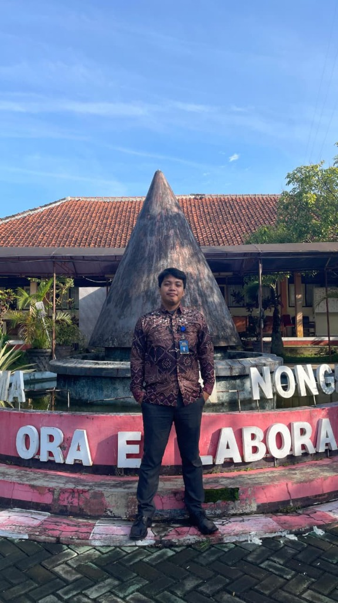
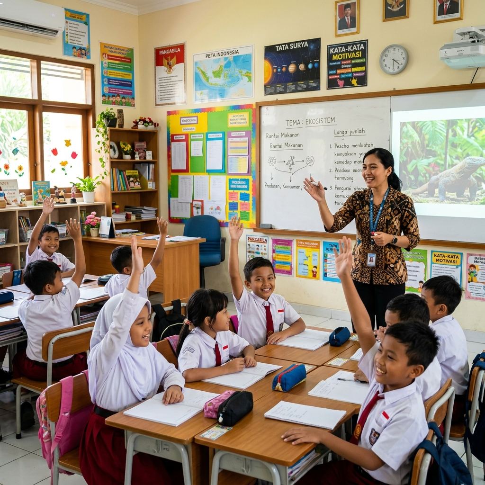
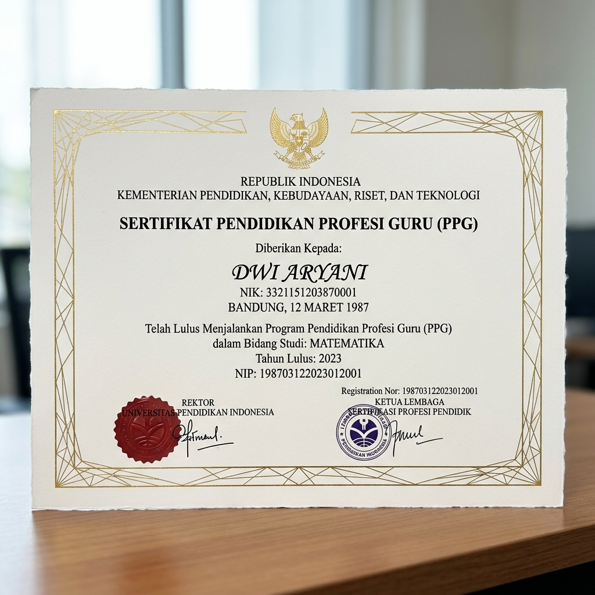
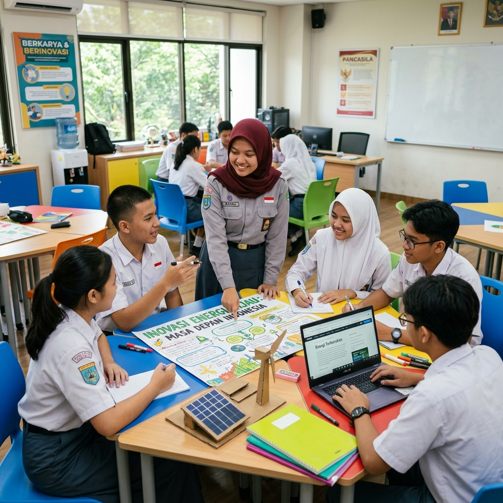

Pendidik yang Tumbuh Bersama Peserta Didik
Dari Pembelajaran Menjadi Pendidik:
Perjalanan Menuju Guru Profesional

Saya adalah seorang pendidik yang berkomitmen untuk terus belajar dan berkembang bersama peserta didik. Melalui Program Profesi Guru (PPG), saya memperkuat kompetensi pedagogik, kepribadian, sosial, dan profesional demi menjadi guru yang efektif dan inspiratif.
Dengan pendekatan pembelajaran yang inovatif dan berpusat pada peserta didik, saya percaya bahwa setiap anak memiliki potensi luar biasa yang menunggu untuk dikembangkan.
S.Pd – Pendidikan Pancasila dan Kewarganegaraan
PPG Prajabatan 2026
SMA Negeri 1 Karangnongko
Klaten, Jawa Tengah
Pendidikan Pancasila
& Kewarganegaraan (PPKn)
Guru Profesional PPG
Kemendikbudristek RI
Memperdalam materi bidang studi Pendidikan Pancasila dan Kewarganegaraan, melakukan analisis kurikulum Merdeka, serta pengembangan perangkat pembelajaran berbasis proyek (PjBL).
Menyusun Modul Ajar, LKPD, bahan ajar digital, dan instrumen penilaian autentik yang berorientasi pada profil pelajar Pancasila.
Melaksanakan praktik mengajar di sekolah mitra, menerapkan model pembelajaran inovatif, dan melakukan refleksi berkelanjutan bersama dosen dan guru pamong.
Menyelesaikan seluruh rangkaian PPG dan memperoleh sertifikat pendidik sebagai bukti kompetensi dan profesionalisme guru.

Implementasi model PjBL dalam pembelajaran Pendidikan Pancasila di kelas XI SMA dengan hasil belajar meningkat 85%.

Sertifikat pendidik resmi dari Kemendikbudristek RI sebagai bukti kompetensi sebagai guru profesional bidang Pendidikan Pancasila dan Kewarganegaraan.

Merancang dan memfasilitasi kegiatan pembelajaran berbasis proyek kelompok yang mendorong kreativitas dan kerja sama peserta didik.
Modul ajar lengkap mencakup CP, ATP, alur pembelajaran, LKPD, dan instrumen asesmen untuk semester genap.
Penelitian tindakan kelas tentang peningkatan motivasi belajar peserta didik menggunakan media pembelajaran digital interaktif.
Pengembangan media pembelajaran digital berbasis video animasi untuk memperjelas konsep mekanisme mesin bagi peserta didik.
"Menjadi guru bukan sekadar pekerjaan, melainkan sebuah panggilan jiwa untuk menerangi masa depan bangsa. Setiap hari adalah kesempatan baru untuk tumbuh bersama peserta didik."
Menciptakan lingkungan belajar yang aman, nyaman, dan menyenangkan
Mengintegrasikan teknologi dalam setiap proses pembelajaran
Menginspirasi peserta didik untuk menjadi pemikir kritis dan kreatif
Terbuka untuk kolaborasi, diskusi pendidikan, dan berbagi praktik baik dalam dunia pengajaran.